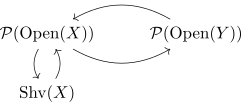

inverse image sheaf adjunction
Proposition
Let $f: X \rightarrow Y$ be a continuous map, then the inverse image sheaf (left kan extension + sheafification) functor is a left adjoint to
Proof
We have an adjunction

where the fnuctor $\mathrm{Shv}(X) \hookrightarrow \mathcal{P}(\mathrm{Open}(X))$ restricts to $\mathrm{Shv}(Y) \subseteq (\mathcal{P}(\mathrm{Open}(Y))$ this follows as: